DeepLearning 基础学习笔记
0.前言
没什么好说的，现在的CV大部分都是深度学习，为了研究生毕业和以后的工作基础，很难不学。因此今天是研究生入学的第二天，我想系统性的学习《吴恩达深度学习》这个课程，希望能够系统性的掌握这些吧。
至于学习路径，我希望是认知-实践-更新认知这样，在记录完每一张的基础理论知识后，如果再后续的实践过程中有对理论的一些新想法，我会回来回馈更新基础部分，就这样反复迭代吧。
1.Neural network and Deep Learning
1.1 Neural network: What is Neural network
考虑一个房价与房间尺寸的关系函数，统计好数据后，将离散的一一对应关系拟合为连续的函数化表达，就是神经网络的作用。例如：
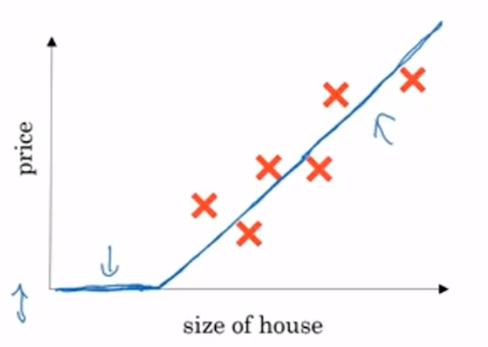
如此拟合的神经网络，就是一个Function的功能，即神经元neuron。实际上形如上图的函数，指的是ReLU函数（修正线性单元 Rectified linear unit）。如下图就是一个较为复杂的神经网络，它由4个输入与1个输出组成，尽管这个神经网络的构建过程是考虑到中间层变量的，但实际上在整个网络的训练过程中，中间层变量是没有体现出来的。


1.2 Binary Classification(二分分类)
给一张图片，判断目标是否为一只猫，那么就会有一个神经网络，输入为图片，输出为1（是一只猫）/0（不是一只猫），这就是一个二分分类的问题，即Binary Classification。
为了处理一张图片，并将图片的全部特征提取出来，我们需要将他的全部颜色储存在一个特征向量中，例如，一张图片大小为64x64的图片，大小为64x64x3，那么特征向量的维度就是64x64x3=12288，为了构建这样一个训练集，我们构建的训练样本应该为有这样的东西\((x,y)\)，其中，\(x\in\mathbb{R}^{n_x},y\in\{0,1\}\)，我们为了简化整个表达过程，需要将训练集构建为一个矩阵表达，通常，特征向量是作为列向量按序放置在矩阵中的。
因此，这个矩阵的列数为m，即训练集样本数；行数为\(n_x\),为特征数。
X.shape为（\(n_x\)，m）
y也这样表达，因此Y.shape为（1，m）
1.3 Logistic Regression（logistic回归）
接续上面的课题，为了识别一张图片是否为对象，输入为图片，输出为是对象的概率。
训练参数为\(w\in \mathbb{R}^{n_x},b\in\mathbb{R}\)
按常理，我们应该训练一个形如这样的函数\(\hat{y}=w^Tx+b\)，但这似乎并不能表示一种概率，我们需要将整个函数的输出值限制在（0，1）之间，因此需要将函数关系这样表达：\(\hat{y}=sigmoid(w^Tx+b)\)，把sigmoid函数中的函数记作z，则它是一个这样的图形，其中\(sigmoid(z)=\frac{1}{1+e^{-z}}\)
当我们表示训练集数据之间的映射关系时，通常在参量的上标处用\((i)\)来表达，以表示这是第i个数据集的关系。

1.4 Cost Function（代价函数）
在Logistic Regression方法中，常用的损失函数为： $\( \mathcal{L}(\hat{y},y)=-(ylog\hat{y}+(1-y)log({1-\hat{y}}) \)\( 值得一提的是，损失函数的优劣，只对单个样本的函数表现起到评判作用，比如在评估第一个样本时，Loss大小不能评估其他样本。因此，我们需要一个函数来评估整体的拟合效果，这就是cost function，代价函数。 \)\( J(w,b)=\frac{1}{m}\sum_{i=1}^{m}\mathcal{L}(\hat{y}^{(i)},y^{(i)})=-\frac{1}{m}\sum_{i=1}^{m}y^{(i)}log\hat{y}^{(i)}+(1-y^{(i)})log({1-\hat{y}^{(i)}}) \)$
1.5 Gradient Descent（梯度下降法）
已经知道，我们需要找到一个能使得代价函数\(J\)保持最小值的\(w,b\)
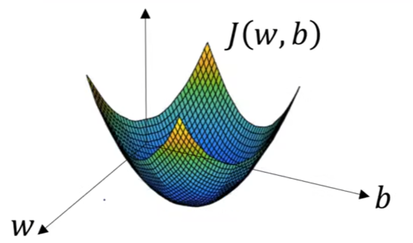
为了简化问题，只看\(J\)关于\(w\)的函数，形如下图，我们将重复这样的过程，来逐渐降低代价函数的值，以确定最优的w的位置。
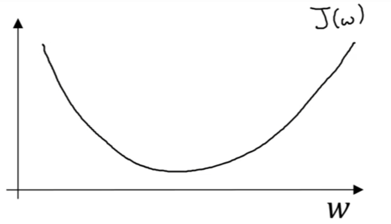 $\( w_i=w_{i-1}-\alpha\frac{dJ(w_{i-1})}{dw_{i-1}} \)\( 其中，\)\alpha$为学习率，目的是控制梯度下降的步长，后者是函数在该点的斜率，可以看出，当斜率是正数时，w应当下降；反之，则应该上升。而当w离最低点越远时，它的斜率越大，下降的也越快。
1.6 Computation Graph（计算图）
在整个训练过程中，实际上是分为Forward和Backward两个步骤的，因此在这里引入了一个计算图的课程。
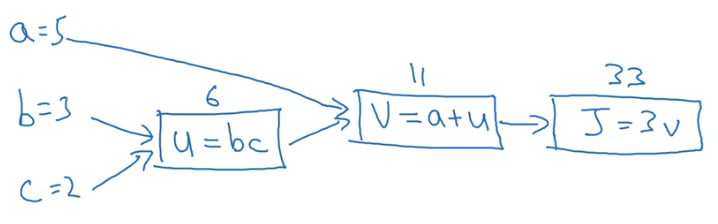
实际上这里就是一个正向推导的过程，最关键的是接下来如何实现红色线的反向过程。
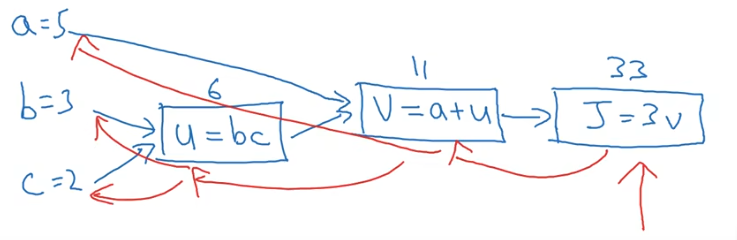
在Logistic回归的过程中，假设样本只有两个，他就是这样的：

1.7 实践与总结
总体的原理就是上面这样，但我还是有些生疏，所以还是要总结一下整体的流程。
1.7.1 数据集的处理
Step one。例子中使用的数据集是h5格式的，应该是用h5py操作封装起来的，使用了一个已经写好的函数，把训练集和测试集的对应命名索引出来了，索引之后会对y进行一个操作，将其改编为 1 行 m_train 列的向量。
Step two。提取出来的图片索引，实际上是一个（m_train, num_px, num_px, 3）的格式，因此我们按照节1.2的理论知识，将这个索引改编为一组（num_px * num_px * 3,m_train）的向量。
Step three。在提取后，由于每个像素的值在0-255内波动，因此我们需要将其标准化为0-1，即除以255，进行标准化。
1.7.2 Logistic回归
分模块分别实现了，分为四个模块
1.初始化函数。
作者将w与b分别初始化，其中，b可以利用广播机制将其自动的扩展到对应的维度，因此我们需要知道w的维度，应该与X的特征数对应，因此将二者分别初始化为对应维度的数值为0的数组即可。
2.前向传播与反向传播函数propagate。
这个过程就是利用已有的w，b，x，y，计算正向传播获得的cost与反向传播计算的dw和db即可，如1.4，反向传播的结论我没有写，是一个恒定的计算。
3.优化过程optimize
这个过程就是循环iterations次，并利用learning_rate作为学习率，对w与b两个参数进行更新操作。propagate函数已经帮我们完成了正向与反向过程，获得了cost和dw与db，根据节1.5的公式，就可以对w与b进行更新，知道完成了iterations次循环。
4.预测predict
这个就是利用训练好的w与b，分别用训练集和测试集数据测试模型的准确性，把值带进去看一下数字就行。
1.8 Softmax 回归
我觉得放在这里合适我就放在这里了。
与logistic回归不同的是，Softmax回归不仅限于能够回答Yes/No的问题，而是识别更多种类的物品。譬如狗/猫/狼/鸡这样的东西。
2.Neural Networks and Deep Learning
2.1 Neural Network’s computation（神经网络计算法）
类似于logistic回归，将每一个神经元理解为一次sigmoid计算，其单元如下所示：

一个简易的神经网络如图所示：
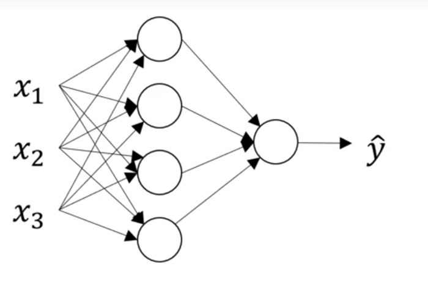
值得注意的是，由\(x_1,x_2,x_3\)组成的是输入层，称之为\(a^{[0]} = X\)，四个竖排神经元承接了输入层的三个参数，称之为隐藏层，这是因为在监督训练中，只包含输入\(x\)输出\(y\)，中间的隐藏层数据不知道；他们被表达为\(a^{[1]}_i\)，其中，上标方括号中为层数，由于输入层为第零层，那么第一个隐藏层就是第一层，上标为1；下标i表示的是隐藏层向量的维度，由四个输出组成，则从上至下依次为1234。
最后一层为输出层，表示为\(\hat{y}=a^{[2]}_1\)。
计算方法以隐藏层第二个神经元为例，它包括sigmoid计算的两个步骤。 $\( z^{[1]}_2 = {w^{[1]}_2}^Tx+b^{[1]}_2 \\ a^{[1]}_2 = \sigma(z^{[1]}_2) \)$ 那么就有其余的隐藏层输出如下图所示：
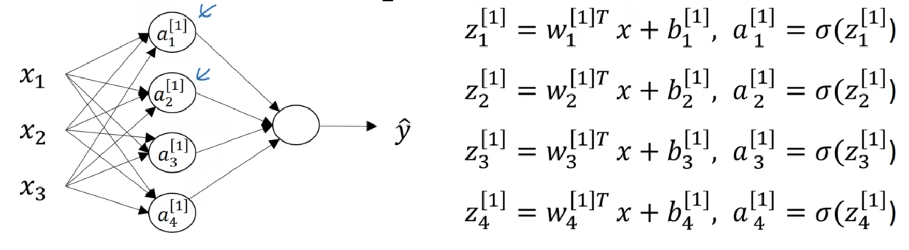
因此也可以进行向量化，如： $\( Z^{[1]} = w^{[1]}x+b^{[1]}\\ a^{[1]} = \sigma(z^{[1]}) \)\( 其中，w为\)4x3\(的矩阵，b为\)4x1$的矩阵。说实话有点现代控制理论的思想，隐藏层的输出可以看作是一列特征向量。
整个神经网络的计算过程就是这样：
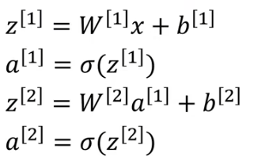
同样，为了避免使用显示的循环函数，我们需要对特征向量进行向量化，并且实现对输入层矩阵的堆叠，例如，堆叠m列，则\(X\)为\((n_x,m）\)的矩阵。
我总结了一个观察w矩阵维度和b矩阵维度的小办法，看上面的双层神经网络，下一层的神经元数记为m，上一层的记为n。那么在这一层的计算中，w矩阵的维度为\((m,n)\)，b的维度为(m,1)
意义：拓展了简单的logistic只能训练单个数据的笨拙，可以一次性训练多个数据。
2.2 Activation functions（激活函数）
激活函数，logistic用到的sigmoid函数就是激活函数，常用于输出层，不适用于隐藏层。
常用到的还有：\(a=tanh(z)\)，相较于sigmoid函数，可以使数据中心化，并且平均值接近于0，不同层的激活函数可以不一样。
\(tanh(z)\)，sigmoid都有一个问题，在z很大的时候，导数都很小，因此为了改善这个问题，在输出不期望为(0,1)的情况下，通常使用\(ReLU=max(0,z)\)函数，如1.1所示。
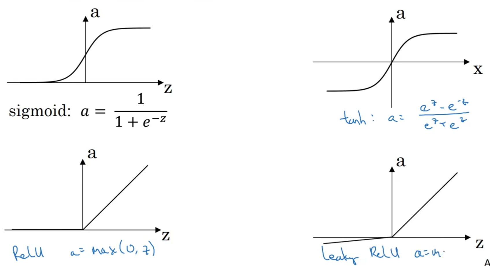
2.3 Meaning of non-linear Activation Function（非线性激活函数的使用意义）
试想：去掉隐藏层的激活函数或使用线性的激活函数，其推导就是这样的过程：

总而言之，隐藏层失去了其获取特征的意义，只是机械性的做线性激活做函数拟合，因此，多隐藏层毫无意义，和直接输入到输出层是一样的效果。
2.4 Derivatives of activation functions（激活函数的导数）
sigmoid function: $\( \frac{d}{dz}g(z) = g(z)(1-g(z)) \)\( Tanh function: \)\( \frac{d}{dz}g(z)=1-g(z)^2 \)\( ReLU function: \)\( \frac{d}{dz}g(z) = \begin{cases} 1\quad \text{if }\ z>0\\ 0\quad \text{if }\ z<0\\ \text{undefine}\quad \text{if }\ z=0 \end{cases} \)\( Leaky ReLU: \)\( \frac{d}{dz}g(z) = \begin{cases} 1\quad \text{if }\ z>0\\ 0.01\quad \text{if }\ z<0\\ \end{cases} \)$
2.5 Gradient descent for neural networks（神经网络的梯度下降法）
不同于以往的是，在初始化参数时，需要随机初始化。其他的大致思维和logistic回归差不多，区别在于加入了隐藏层，需要多算一次，推理太麻烦了我不看了，以后再补充。
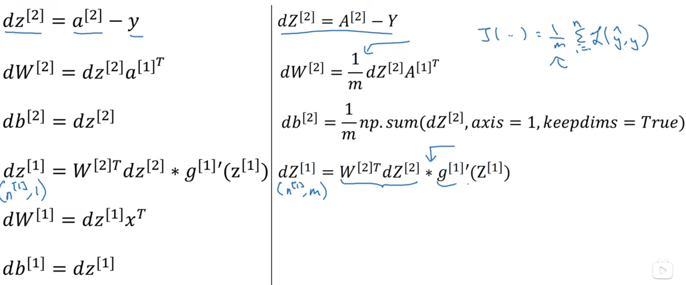
在随机初始化时，通常使用
w[1] = np.random.randn((2,2))*0.01
b[1] = np.zero((2,1))
w[2] = np.random.randn((2,1))*0.01
b[2] = 0
为什么要乘以0.01呢，是因为在计算参数时，w过大，会导致z过大，而在激活函数中，当z过大或过小时，都会使斜率接近0，这样会导致梯度下降的速度非常慢，影响训练速度。
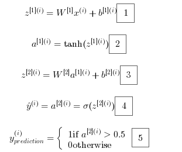
2.6 Deep NN的矩阵估计法
在发现矩阵大小出现错误时，按此法估计即可。
2.7 Why Deep？

这是吴恩达的理解，以这张图片为例，例如第一层能做一些简单的边缘识别、第二层能够识别面部的五官、第三层则能够识别整个人脸，这是因为随着隐藏层的增多，深度神经网络能够检测到一些更加精细与抽象化的特征，因此能完成更多复杂的任务。
其实与数字电路很接近，到目前为止，集成化已经做的很好了，比如MCU，但是，STM32F1C8T6 和 STM32F1ZET6的封装为什么不一样呢，一方面，引脚不一样，功能不一致；另一方面，算力不一样。因此，实际上越大（同样集成化水平）的芯片，能够执行的任务相较于较小封装的芯片就是更多一些，应该也算是深度神经网络 Deep的意义吧。
2.8 Hyperparameters
不同于梯度下降时更新的参数w与b，有些参数需要去根据效果人为调整，这类似于PID算法中的几个参数，不同的对象与网络都有不同的参数，这需要自己去适应，我们叫他超参数，Hyperparameters。为什么叫超参数呢，因为通过调整这些参数，事实上调整了w与b。
例如，梯度下降法学习率，迭代次数iterations，隐藏层层数，隐藏层单元数，激活函数类型等等。
2.9 Some tips
在实践中，其实对多隐藏层的神经网络的反向过程我不是很明确，因此做完了，趁还记得，做一个小总结。
实际上，在反向推到的过程中，我们需要通过指导L+1层的东西，例如\(dA[L+1]\),\(LinearCache[L]\),\(ActivationCache[L]\)，前者存储的是A,W,b，后者存储的是Z。
在获取所谓反向过程的东西时，实际上获得的是：\(dA[L],dW[L+1],db[L+1]\)
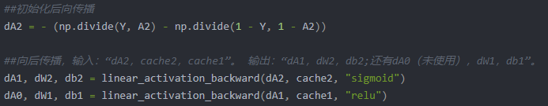
3. Better Deep Learning
3.1 Train/dev(hold-out cross validation)/test Datasets(训练、验证、测试集)
训练集是为了执行训练算法，通过调整超参数达到对训练集的一个最好的验证。
验证集是为了在训练集训练结束后，对成果模型中选择一个最好的。
测试集是无偏差的测试被选中模型的优劣性。
要保证验证集数据与测试集数据来自同一分布？？？
3.2 Bias/Variance(偏差、方差)
这一块主要就是在讲，什么是偏差什么是方差，比如：
若训练集错误率为1%，而验证集错误率为11%，那么可以说模型的拟合程度较好，但准确率较低，这样的情况是高方差（High variance）
若训练集的错误率为15%，验证集为16%，那么这样的情况就说明模型的拟合程度很差，导致准确率不高，这样就说是高偏差（High bias）
若训练集的错误率为15%，验证集为30%，那么这样的情况就说明模型的训练情况烂完了，这样就说是高偏差和高方差。

线性函数偏差高，因为只是线性分类；紫色曲线方差高，因为过拟合；蓝色虚线都低。
因此一个炼丹的正确流程，应该是：
第一步：初始的训练集训练完成了，我要用训练集数据对这个模型初步的错误评估。如果错误率很高，那么这个模型的偏差太高了，就需要对训练数据集/训练轮次/神经网络架构进行调整。如果很低，直接第二步。
第二步：训练集测试通过，我就要考虑这个模型对于测试集的效果怎么样了。如果错误率很高，就要考虑增加训练集数据量/正则化/调整神经网络架构。如果很低，第三步。
第三步：结束了，看看符不符合你的要求就可以了，一个模型就这样实现了。
3.3 Regularization（正则化）
正则化，其实是一个保持偏差值不变，而降低方差值的一个最好的方法。
以logistic回归为例，介绍正则化方法，已知该回归的代价函数如下，进行简单的变形，就获得了L2正则化。 $\( J(w,b)=\frac{1}{m}\sum^{m}_{i=1}\mathcal{L}(\hat{y}^{(i)},y^{(i)})+\frac{\lambda}{2m}||w||^{2}_2\\ ||w||^2_2=\sum^{n_x}_{j=1}w_j^2=w^Tw \)\( L1正则化则是将增添部分更改： \)\( \frac{\lambda}{m}||w||_1 = \frac{\lambda}{m}\sum^{n_x}_{j=1}w_j \)$ 如果使用L1，那么最终获得的W将会是稀疏的，有很多零。但更多使用的是L2正则化。
同理，在神经网络中，由于w的大小不在是简单的行矩阵，因此范数的计算有所改变。 $\( ||w^{[l]}||^2_F=\sum^{n^[l-1]}_{i=1}\sum^{n^[l]}_{j=1}(w^[l]_{ij})^2 \)$ 这样的范数叫做Frobenius，用下标F表示。
因此，在计算结束后，\(dw^{[l]} = {dw}_{original}+\frac{\lambda}{m}w^{[l]}\)，随后再执行梯度下降即可，其实对梯度下降的影响就是，减去了更多的dw，因此L2范数正则化也被叫做权重衰减。
至于为什么会降低方差，看这张图吧
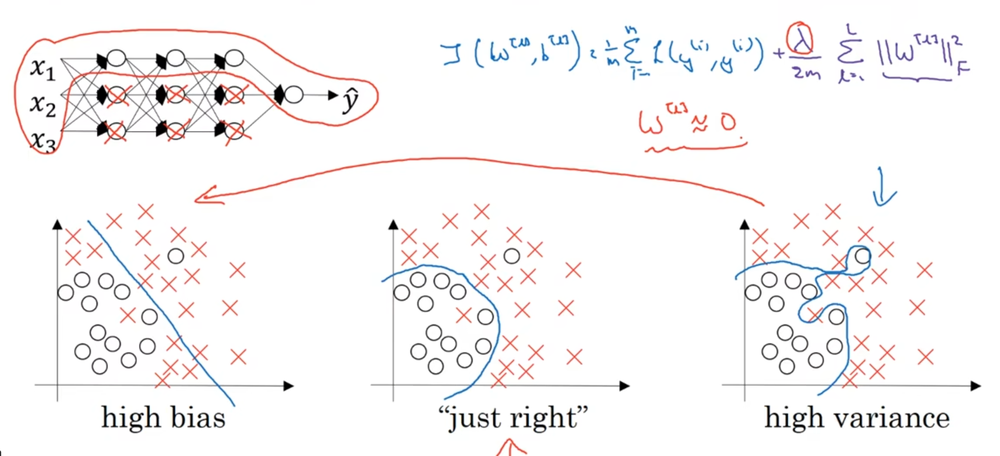
实际上，正则化的作用就是在梯度下降那一步，降低了w的大小使它接近于0，从而降低了神经网路中多隐藏层的神经元的作用力。简单化的网络必然线性，因此就会从high variance 一点点变成 high bias，所以必然有一个值\(\lambda\)会使整个模型处于just right的程度
还有一种常用的正则化叫Dropout
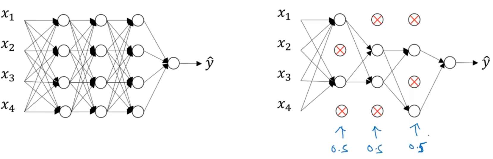
这是真玄学，一个完整的神经网络，现在要为每个神经元设置一个单独的drop概率，像是右图的0.5一样，在每一轮训练时，根据drop概率来判断这个节点是否参与计算。
我感觉就是不知道最合适的隐藏层数和隐藏维度，然后用碰运气的方式去找到那个最合适的数值，帮你确定一个好的超参数。
也有一种思想是避免训练过程中，某一节点的权重过大，要分散权重
3.4 Normalizing input（归一化输入）

左图为原始数据，右图为归一化数据，其实就是计算一个均值，使整个数据集整体移动，平均分布在原点处。
$\(
x = x-\mu = x-\frac{1}{m}\sum^{m}_{i=1}x^{(i)}
\)\(
随后需要将他们在y上均匀分布。
\)\(
\sigma^2 = \frac{1}{m}\sum^M_{i^2=1}x^{(i)**2}\\
x = x/\sigma
\)$

直观理解，就是在梯度下降时更好的找到极小值。
3.6 Mini-batch 梯度下降法
什么是batch，就是批次。如果你的数据集有5000万个数据，一起运算太吃显存了，所以调整batch，比如1000个一族，反复循环5万次，可以有效解决爆显存的问题。
但是，与刚开始那个算法，我们叫batch梯度下降法，不太一样的是，如果大家一起训练，那么整体的趋势都是相同的，因此cost的下降是一个连续的平滑曲线，一点点降低的。但是如果分批次训练，就会使cost出现噪声，原因在于不能保证每个批次在交接的时候都能清楚的向上一个批次优化的方向进行，但整体来说还是向着梯度下降的方向进行的。
需要注意的是，对于模型的权重矩阵，是一起训练的，所以在一个epoch内才会乱动。
3.7 Learning rate decay 学习率衰减
为了解决上述算法的劣势，学习率衰减的意义就在于，随着批次的推后，由于大方向是向着极小值出发的，因此降低学习率，使得噪声的走错方向变小，并使得最终的摆动幅度只在最小值的一个小范围的区域内。
3.9 Momentum 动量梯度下降法
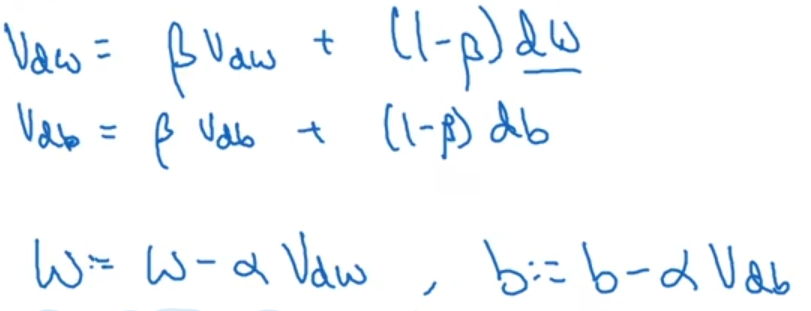
简短来说，就是一个dw/db的低通滤波器，使得二者能够缓慢且平滑的下降，变成红线那样，常用的\(\beta\)是0.9
3.10 RMSprop
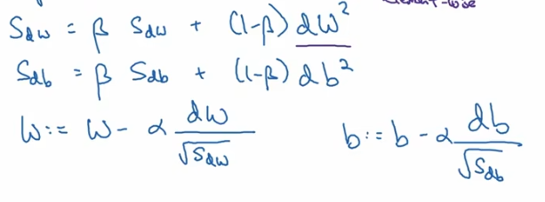
和Momentum方法不太一样的是，RMSprop在横轴上的摆动幅度很大，而纵轴很小。Momentum恰恰相反。
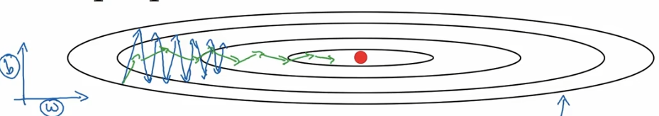
吴恩达说这个下降法能给一个大的学习率，因为纵轴的移动被削减了，所以不会乱摆。
3.x 总结
这一张主要就是关于优化。
首先，关于梯度爆炸与梯度消失，我们可以通过正则化w矩阵进行，其方法就是在随机初始化参数后，后面带一个np.sqrt(2/layers_dims[l-1])的系数即可。
其次，为了解决过拟合问题，通常采用正则化方法，包括L2正则化与Dropout正则化。
前者需要在正向过程中加入一个这样的算子：

并在反向过程中，在每次计算dw时考虑((lambd * W3) / m )。
后者需要随机初始化一个决断矩阵D，矩阵与隐藏层输出有关，随机初始化的结果应该是一个非1即0的矩阵(与keep_prob相比)，随后将其与A相乘，获取一个截断后的矩阵，并将这个矩阵除以keep_prob。
在方向过程中，仍用之前初始化的决断矩阵进行拦截，并对拦截结果继续除以keep_prob即可。
对于梯度不放心的，可以自己用导数定义算算每次梯度计算的结果是否正确。
关于重要程度，吴恩达给了一个红-黄-紫的排列顺序。

4 卷积神经网络
4.1 经典论文解读
说实话我跳过了写卷积层、池化层的一些作用与功能，但事实上我们只需要这样理解，就是：卷积层与池化层构成了DNN视角下的神经网络的一层，因此CNN的思路和DNN是一样的，只不过使用一个filter的思想去处理一个图片，但是也不是数学意义上的卷积，因为没有做对称变换。
为什么要用filter去处理呢？前面我们思考过这样的一个问题：一个64x64x3的小猫图片，处理成一个特征向量，它的数量有13000个左右，但事实上你爬虫爬下来的图片不可能这么小，我们扩大一点点，比如一个100x100x3的，那就是30000个，事实上更大，这样，我们在提取这样一张图片的特征时，如果想要尽可能的提取它的特征，一层神经网络要有多少组参数，整个神经网络就更大了，因此我们选择用卷积神经网络的方式，先尽可能的提纯图片中的特征，比如一个1000x1000x3的图片，神经网络将其压缩至7x7x1000，那就是缩小了很多，至少在参数上大大降低了计算机的显存风险。随后将这个7x7x1000扔到DNN去做softmax或者线性回归都可以了。
好了，到论文解读环节了：
4.1.1 LeNet-5
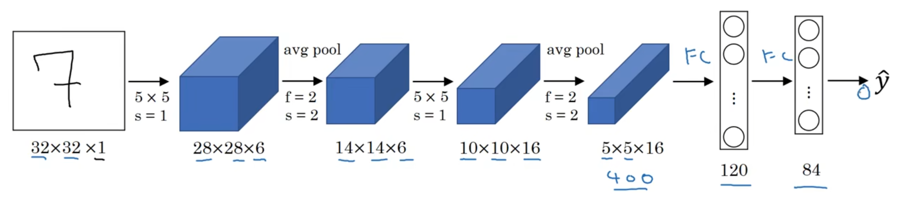
这是LeNet-5的网络架构，为手写数据集（灰度图）设计的。
4.1.2 Alexnet

4.1.3 VGG-16
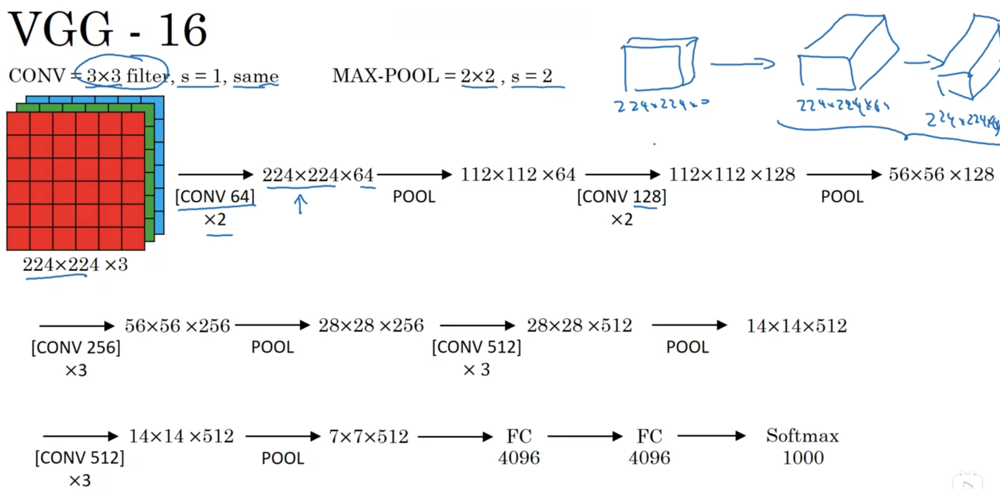
4.2 ResNets 残差网络
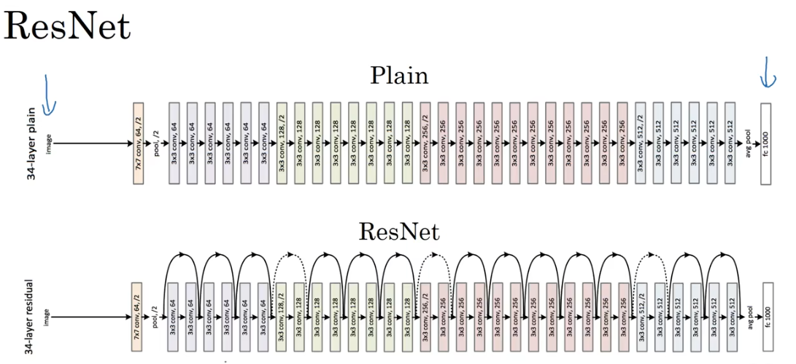
为什么要加入这个skip connection呢，就是因为随着深度增加，梯度爆炸或者梯度消失的问题很难解决，加入了这个skip，就可以在发生这个情况的时候抹除掉这个神经元的作用，理解下来感觉就是dropout的一种思想，只不过这个没有解决平均分配权重的问题哈哈。
4.3 Inception

卷积含义的全连接层

分成很多组卷积，然后拼接起来，这样可以减少计算量。真的可以，你可算一下previous activation的输出，直接通过一个3x3 的Conv层到输出28x28x128，我算下来是221k个参数；然后如果是先经过1x1，再3x3，就是130k个参数。上图就是一个inception模块。
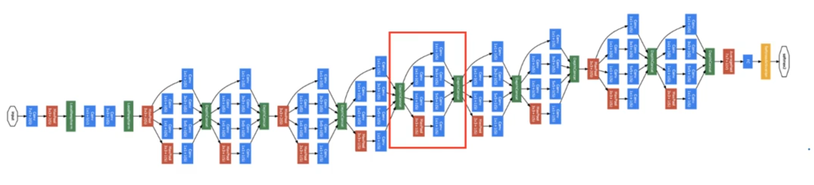
这就是一个inception network
实际上，再中间的某些连接层输出，也会通过两个FC，做一次softmax做预测。为什么叫inception，是因为翻译过来是盗梦空间，里面有一段这样的台词和梗图：
为了降低deeper的代价，他们选择了降低计算成本，所以建立了inception单元。
4.4 Transfer Learning
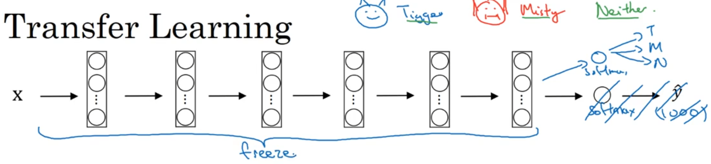
比如原来的模型作用是对1000个物体进行分类，我现在只想分类三种，那我就把最后一层的softmax层给删了，自己重新训练一层softmax，关键在于之前的特征提取层的参数全部冻结，只训练最后一层的softmax。
4.5 物体定位
在之前的监督训练里，我们只需要实现是或不是的分类任务，比如这个数字是几，他的label就是几，这个图片如果不是猫，那么他的lable就是0，然而，在计算机视觉中，需要执行的任务往往复杂的多，例如一个很经典的开源项目YOLO，就是一个标准的目标定位任务。
为了实现这个目的，在训练时需要将监督训练的label转换为更为复杂的形式。
例如，当我们标记这张图片里是否有车子、行人或者摩托车，这是一个softmax任务；同时，我们还需要实现这个物体的定位，即在他周围画上最小的标记框。这个就需要额外的label，在这里，吴恩达使用了8行的列向量：是否有目标、中心点x、y坐标、框的高度h、框的宽度w以及三个softmax分类。
那么下一步最关键的就是实现特征点的位置检测，如何确认准确的中心点？
4.5.1 滑动窗口
其实卷积神经网络就是一个滑动窗口，窗口大小和卷积层有关，区别于YOLO的地方在于输出，我们考虑之前那个例子，要有一个8行的列向量输出，代表了这一次这张图片是否具有目标物体等等，实际上就是卷积核作为一个滑动窗口，一点点的扫描整张图像，然后输出一个整体特征的理解。
4.5.2 YOLO
yolo则是利用这种滑动窗口的思想，他将扫描的部分分为几个区域，比如3x3，然后输出一个3x3x8的一个特征向量，含义是，在这9个区域中，各自区域具有的特征分别是什么。
5. 循环神经网络 RNN
5.1 序列模型
说白了，一段语音、一段文本都可以是一个序列模型。那么对于序列，卷积神经网络的处理能力就大大降低了，就像是之前实验的一样，目前我能想到的就只有DNN能够处理，因此发明了RNN，能够处理序列输入、其他输出或者其他输出序列输入或者任意排列组合。
5.2 RNN

以一层为例，介绍这个神经网络的计算流程，值得注意的是这里用于计算a1和y1的权重是两组，因此实际上这个网络一层就具有至少两组向量，一组用于承接上一次的激活输出、本层的文本输入与bias/另一层负责将本层的激活输出转换为神经网络输出。
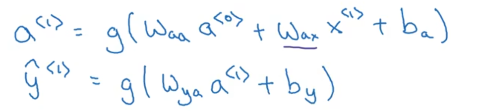
这种网络结构的缺点是有上文，无下文。导致在判断前面单词的时候并不能结合后面文本的特征。